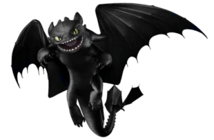

Furia Nocturna
Introduccion
Clase: Embestida
Habilidad/es: Dientes retráctiles, camuflaje de noche, velocidad supersónica, control de intensidad de disparos, ecolocalización, disparos de plasma, gran sentido del olfato y una increíble audición.
Hábitat: Desconocido
¿Se puede entrenar? Sí.
Ataque: 15
Velocidad: 20
Armadura: 18
Poder de fuego: 14
Límite de disparos: 6
Veneno: 0
Mandíbula: 6
Sigilo: 18
